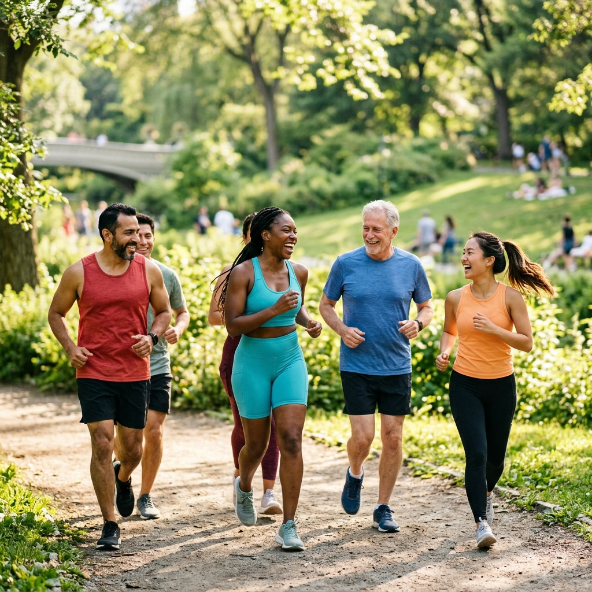

Il Contesto
Lo sport e le attività ricreative sono eccezionali canali di crescita, inclusione e salute. Tuttavia, sia a livello agonistico che dilettantistico, atleti e sportivi in genere sperimentano spesso blocchi psicofisici, ansia da prestazione o tensioni relazionali che frenano il proprio potenziale e spengono il piacere del movimento.
Cosa Facciamo
Integriamo l'attività sportiva e la normale preparazione atletica con la consapevolezza corporea ed emotiva del Metodo Magrin. Lavoriamo al fianco di singoli atleti e gruppi sportivi per insegnare a:
- Trovare uno strumento di benessere nello sport e nella vita quotidiana: imparare a riconoscere le sensazioni nel corpo collegate a situazioni di ansia, stress o difficoltà emotiva nell'ambito dello sport, ma anche della vita quotidiana, ed avere uno strumento efficace per poter rilasciare queste sensazioni attraverso la consapevolezza corporea, aumentando il benessere emotivo e fisico.
- Gestire l'ansia da competizione e superare i propri blocchi: riconoscere i segnali fisici dello stress (battito accelerato, contratture, respiro corto) e rilasciarli autonomamente, trasformandoli in concentrazione e presenza lucida. Rilasciare i loop mentali negativi connessi al timore di sbagliare o alla paura di infortunarsi, ristabilendo una relazione di fiducia con il corpo.
- Ottenere presenza mentale e consapevolezza corporea: il Metodo Magrin, basandosi sull'ascolto profondo del corpo, offre uno strumento per migliorare la propria consapevolezza e presenza. Grazie allo scioglimento delle sensazioni negative, i pensieri collegati ad esse si calmano, favorendo uno stato di presenza mentale che va a migliorare le performance sportive e aiuta il raggiungimento dei propri obiettivi.
- Migliorare l'armonia di squadra: favorire dinamiche di gruppo positive, riducendo l'agonismo distruttivo tra compagni a favore di una collaborazione reciproca.
Benessere alla Portata di Tutti
Sebbene l'area "Sport e Tempo Libero" non veda attualmente progetti attivi strutturati sul territorio, l'associazione è attiva nella pianificazione di collaborazioni con ASD, società sportive, scuole di danza e centri ricreativi. Crediamo che l'integrazione tra benessere emotivo e attività fisica sia la chiave per favorire uno sviluppo armonioso ed equilibrato per tutte le fasce d'età.